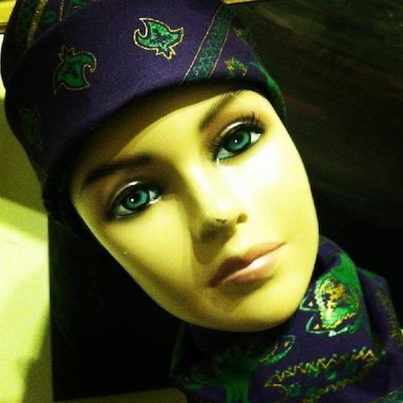

the Ban-de-Lis
In 2013, out of a desire to learn elements of graphic design and to create something visually unique from concept to actual product, I designed and printed a fleur-de-lis bandana under the direction of my friend McCall Young, who had pitched me the idea in an effort to see if I might be able to help materialize it. Drawing themes from the classic paisley bandana, I wanted my fleur-de-lis to stand out from other tired and contrived design concepts, utilizing a hand-drawn quality that was somewhat crude and reminiscent of a graffiti tag. I utilized Adobe Creative Suite to convert my design from ink on paper, to graphics on a console, to print on actual fabric.
